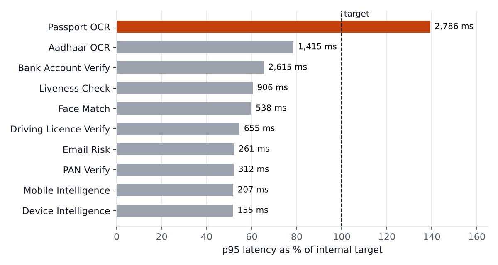
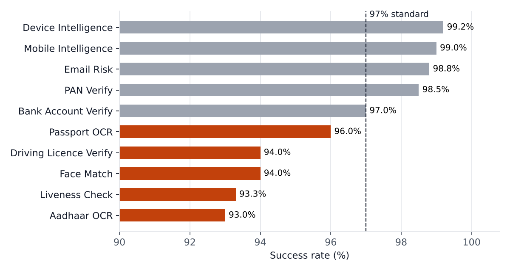
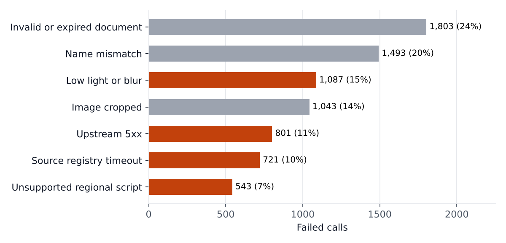
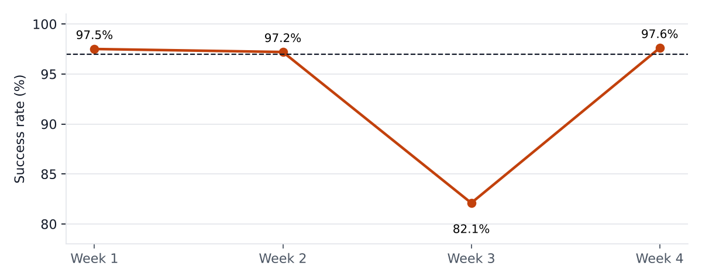

VerifyBench: Benchmarking Identity Verification APIs
How I would benchmark verification APIs on latency and success rate, explain why verifications fail, and decide what to fix first. By Anisha Tiwary.
All data is simulated: 200,000 calls across 10 APIs for September 2026, with 4 problems planted to test whether the method finds them. It found all 4. Competitor figures are invented.
1. Latency: one API breaks its target
Passport OCR is the only API over its latency target, and 1,086 ms slower than the competitor at p95. 11.4% of its successful calls exceed the target. Every other API beats both its target and the competitor.

p95 of successful-call latency per API, as a share of its internal target.
2. Success rate: five APIs miss the standard

| API | Calls | p50 ms | p95 ms | Target p95 | Competitor p95 | Success |
|---|---|---|---|---|---|---|
| Passport OCR | 20,118 | 1,153 | 2,786 | 2,000 | 1,700 | 96.0% |
| Aadhaar OCR | 19,903 | 899 | 1,415 | 1,800 | 1,650 | 93.0% |
| Bank Account Verify | 19,963 | 1,512 | 2,615 | 4,000 | 3,600 | 97.0% |
| Liveness Check | 20,198 | 601 | 906 | 1,500 | 1,300 | 93.3% |
| Face Match | 19,990 | 349 | 538 | 900 | 800 | 94.0% |
| Driving Licence Verify | 19,897 | 401 | 655 | 1,200 | 1,100 | 94.0% |
| Email Risk | 20,100 | 150 | 261 | 500 | 450 | 98.8% |
| PAN Verify | 19,874 | 181 | 312 | 600 | 520 | 98.5% |
| Mobile Intelligence | 20,141 | 120 | 207 | 400 | 380 | 99.0% |
| Device Intelligence | 19,816 | 90 | 155 | 300 | 320 | 99.2% |
SQLite has no percentile function, so p50 and p95 come from window functions:
WITH ranked AS (
SELECT api, latency_ms,
ROW_NUMBER() OVER (PARTITION BY api ORDER BY latency_ms) AS rn,
COUNT(*) OVER (PARTITION BY api) AS n
FROM api_calls WHERE status = 'success'
)
SELECT api,
MAX(CASE WHEN rn = CAST(0.50 * n AS INT) THEN latency_ms END) AS p50,
MAX(CASE WHEN rn = CAST(0.95 * n AS INT) THEN latency_ms END) AS p95
FROM ranked GROUP BY api;
3. Why did verifications fail?
Users who fail a verification complete onboarding 21% of the time, against 88% for users who pass. Cutting success rate by device, week and document language finds three clusters:

Orange: causes the platform can fix (capture, upstream, OCR coverage). Grey: user-side.
| Where it fails | Success: segment vs rest | Calls | Onboardings lost | Likely cause |
|---|---|---|---|---|
| Face Match and Liveness on low-end Android | 85.2% vs 96.2% | 9,550 | ~701 | Low light and blur from weak phone cameras |
| Driving Licence Verify, 15 to 21 Sep | 82.1% vs 97.5% | 4,561 | ~468 | Government source registry timing out |
| Aadhaar OCR on Tamil and Bengali cards | 82.3% vs 95.6% | 3,989 | ~354 | OCR model not trained on these scripts |

A weekly success-rate check catches an upstream outage like the Driving Licence registry drop in week 3.
Client segment made no difference: Lending, Fintech, Gaming and E-commerce all sit at 96.2% to 96.3% success. The problem lives in the device, the document and the upstream source.
4. What I would fix first
- Light and blur check before Face Match and Liveness upload on low-end Android, with a retake prompt (Engineering). ~701 onboardings a month.
- Alert on a 3-point weekly success drop, plus retry with backoff and a fallback source for registry timeouts (Engineering). ~468 onboardings in an outage week.
- Source and tag Tamil and Bengali Aadhaar cards, then retrain OCR (Product, data). ~354 onboardings a month.
- Profile Passport OCR's slow tail by document layout to close the gap to the competitor (Engineering).
- One weekly benchmark view for every API using these checks (Product analytics).